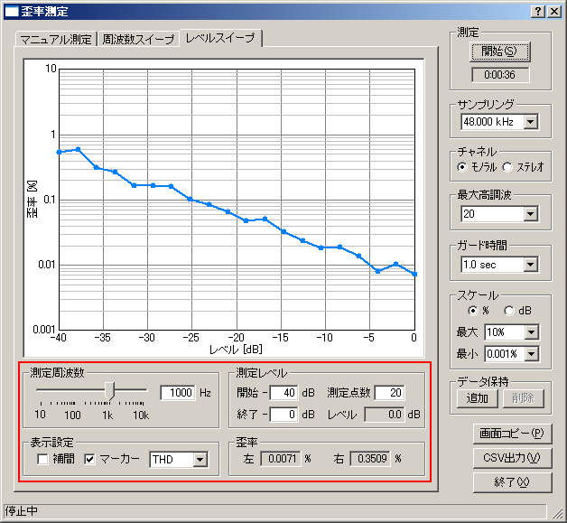

| 項目 | 説明 |
|---|---|
| 測定周波数 | スライダーを移動させるか値を直接入力して測定周波数を指定します。 |
| 測定レベル | 測定開始レベル、終了レベルとその間を何点測定するかを設定します。（最大レベルを0dBとします） |
| 表示 |
「補間」ボックスをチェックすると側定値の間をスプライン補間して表示します。 「マーカー」ボックスをチェックすると測定点にマーカー（丸い点）を表示します。 プルダウンでTHD（全高調波歪率）,2ndHD（第２高調波歪率）,3rdHD（第３高調波歪率）を選択します。 |
| 歪率 | 測定中の歪率(THD)を表示します。 |